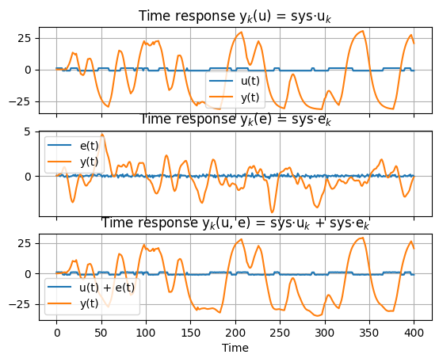
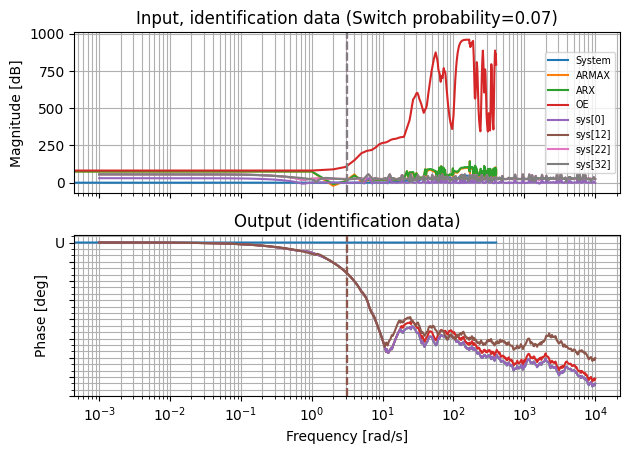
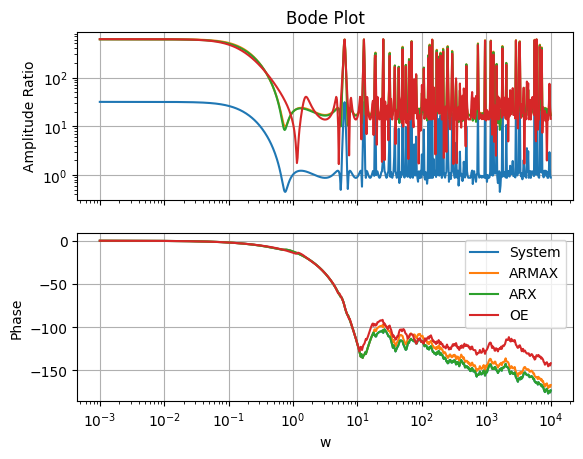
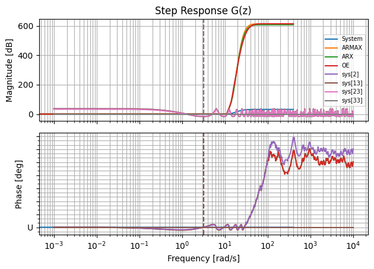
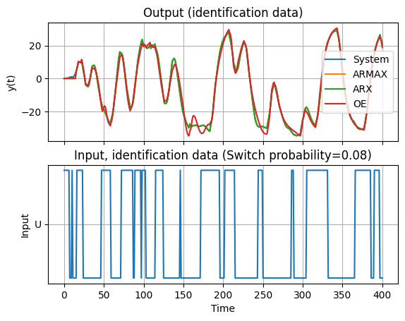
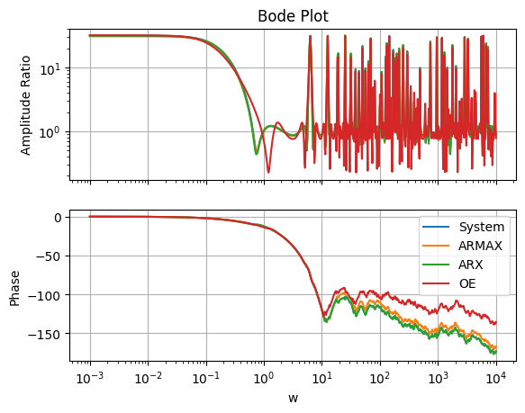
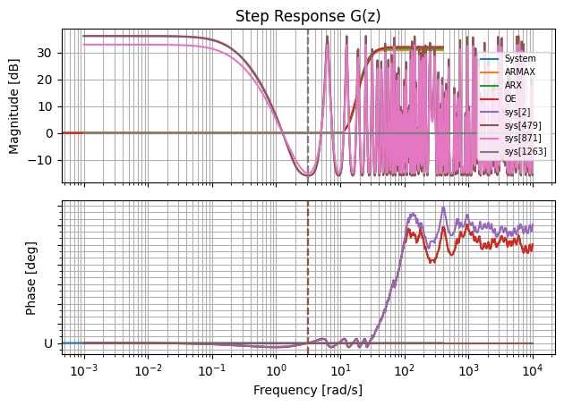
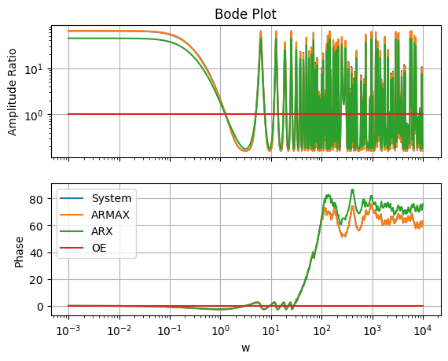
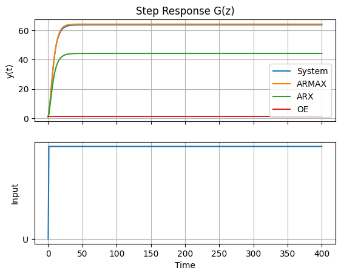

Rls
Recursive Least Squares¶
import control.matlab as cnt
import numpy as np
from utils import (
W_V,
plot_bode,
plot_response,
plot_responses,
)
from sippy_unipi import system_identification
from sippy_unipi.datasets import gen_gbn_seq, load_sample_siso, white_noise_var
from sippy_unipi.evaluate import validation
from sippy_unipi.typing import IOMethods
np.random.seed(0)
modes = ["FIXED", "IC"]
ylegends = ["System", "ARMAX", "ARX", "OE"]
n_samples = 401
ts = 1.0
time, Ysim, Usim, g_sys, Yerr, Uerr, h_sys, Ytot, Utot = load_sample_siso(
n_samples, ts, seed=0
)
fig = plot_responses(
time,
[Usim, Uerr, Utot],
[Ysim, Yerr, Ytot],
["u", "e", ["u", "e"]],
)

for mode in modes:
if mode == "IC":
na_ord = (4, 4)
nb_ord = (3, 3)
nc_ord = (2, 2)
nd_ord = (3, 3)
nf_ord = (4, 4)
theta = (11, 11)
elif mode == "FIXED":
na_ord = [4]
nb_ord = [[3]]
nc_ord = [2]
nf_ord = [4]
theta = [[11]]
identification_params: dict[
IOMethods,
tuple[tuple[list[int] | list[list[int]] | tuple[int, int], ...], dict],
] = {
"ARMAX": (
(na_ord, nb_ord, nc_ord, theta),
{"IC": "BIC", "id_mode": "RLLS"},
),
"ARX": ((na_ord, nb_ord, theta), {"IC": "BIC", "id_mode": "RLLS"}),
"OE": ((nb_ord, nf_ord, theta), {"IC": "BIC", "id_mode": "RLLS"}),
}
syss = []
for method, orders_params in identification_params.items():
orders, params = orders_params
sys_id = system_identification(
Ytot, Usim, method, *orders, max_iter=300, **params
)
syss.append(sys_id)
ys = [Ytot] + [getattr(sys, "y_id").T for sys in syss]
fig = plot_response(
time,
ys,
Usim,
legends=[ylegends, ["U"]],
titles=[
"Output (identification data)",
"Input, identification data (Switch probability=0.08)",
],
)
switch_probability = 0.07
input_range = (0.5, 1.5)
[U_valid, _, _] = gen_gbn_seq(
n_samples, switch_probability, scale=input_range
)
white_noise_variance = [0.01]
e_valid = white_noise_var(U_valid.size, white_noise_variance)[0]
Yvalid1, time, Xsim = cnt.lsim(g_sys, U_valid, time)
Yvalid2, time, Xsim = cnt.lsim(h_sys, e_valid, time)
Ytotvalid = Yvalid1 + Yvalid2
ys = [Ytotvalid] + [
validation(sys, U_valid, Ytotvalid, time) for sys in syss
]
fig = plot_response(
time,
ys,
Usim,
legends=[ylegends, ["U"]],
titles=[
"Input, identification data (Switch probability=0.07)",
"Output (identification data)",
],
)
for y, sys in zip(ys[1:], syss):
yv = y.T
rmse = np.sqrt(np.mean((Ytotvalid - yv) ** 2))
R2 = 1 - np.sum((Ytotvalid - yv) ** 2) / np.sum(
(Ytotvalid - np.mean(Ytotvalid)) ** 2
)
print(f"RMSE = {rmse:.2f}")
print(f"R2 = {R2:.02f}")
u = np.ones_like(time)
u[0] = 0
for tf in ["G", "H"]:
syss_tfs = [
locals()[f"{tf.lower()}_sys"],
*[getattr(sys, tf) for sys in syss],
]
mags, fis, oms = zip(*[cnt.bode(sys, W_V) for sys in syss_tfs])
fig = plot_bode(
oms[0],
mags,
fis,
ylegends,
)
ys, _ = zip(*[cnt.step(sys, time) for sys in syss_tfs])
fig = plot_response(
time,
ys,
u,
legends=[ylegends, ["U"]],
titles=["Step Response G(z)", None],
)
/home/runner/work/SIPPY/SIPPY/sippy_unipi/identification.py:99: UserWarning: Ignoring argument 'IC' as fixed orders are provided.
warn("Ignoring argument 'IC' as fixed orders are provided.")
/home/runner/work/SIPPY/SIPPY/.venv/lib/python3.12/site-packages/control/timeresp.py:1083: UserWarning: return_x specified for a transfer function system. Internal conversion to state space used; results may meaningless.
warnings.warn(
RMSE = 44.51
R2 = -5180.52
RMSE = 48.01
R2 = -6028.03
RMSE = 657.74
R2 = -1131686.22
/home/runner/work/SIPPY/SIPPY/.venv/lib/python3.12/site-packages/control/lti.py:114: UserWarning: __call__: evaluation above Nyquist frequency
warn("__call__: evaluation above Nyquist frequency")
/home/runner/work/SIPPY/SIPPY/.venv/lib/python3.12/site-packages/control/freqplot.py:435: FutureWarning: bode_plot() return value of mag, phase, omega is deprecated; use frequency_response()
warnings.warn(
/home/runner/work/SIPPY/SIPPY/.venv/lib/python3.12/site-packages/control/lti.py:114: UserWarning: __call__: evaluation above Nyquist frequency
warn("__call__: evaluation above Nyquist frequency")
/home/runner/work/SIPPY/SIPPY/.venv/lib/python3.12/site-packages/control/freqplot.py:435: FutureWarning: bode_plot() return value of mag, phase, omega is deprecated; use frequency_response()
warnings.warn(
/home/runner/work/SIPPY/SIPPY/.venv/lib/python3.12/site-packages/control/lti.py:114: UserWarning: __call__: evaluation above Nyquist frequency
warn("__call__: evaluation above Nyquist frequency")
/home/runner/work/SIPPY/SIPPY/.venv/lib/python3.12/site-packages/control/freqplot.py:435: FutureWarning: bode_plot() return value of mag, phase, omega is deprecated; use frequency_response()
warnings.warn(
/home/runner/work/SIPPY/SIPPY/.venv/lib/python3.12/site-packages/control/lti.py:114: UserWarning: __call__: evaluation above Nyquist frequency
warn("__call__: evaluation above Nyquist frequency")
/home/runner/work/SIPPY/SIPPY/.venv/lib/python3.12/site-packages/control/freqplot.py:435: FutureWarning: bode_plot() return value of mag, phase, omega is deprecated; use frequency_response()
warnings.warn(
/home/runner/work/SIPPY/SIPPY/.venv/lib/python3.12/site-packages/control/lti.py:114: UserWarning: __call__: evaluation above Nyquist frequency
warn("__call__: evaluation above Nyquist frequency")
/home/runner/work/SIPPY/SIPPY/.venv/lib/python3.12/site-packages/control/freqplot.py:435: FutureWarning: bode_plot() return value of mag, phase, omega is deprecated; use frequency_response()
warnings.warn(
/home/runner/work/SIPPY/SIPPY/.venv/lib/python3.12/site-packages/control/lti.py:114: UserWarning: __call__: evaluation above Nyquist frequency
warn("__call__: evaluation above Nyquist frequency")
/home/runner/work/SIPPY/SIPPY/.venv/lib/python3.12/site-packages/control/freqplot.py:435: FutureWarning: bode_plot() return value of mag, phase, omega is deprecated; use frequency_response()
warnings.warn(
/home/runner/work/SIPPY/SIPPY/.venv/lib/python3.12/site-packages/control/lti.py:114: UserWarning: __call__: evaluation above Nyquist frequency
warn("__call__: evaluation above Nyquist frequency")
/home/runner/work/SIPPY/SIPPY/.venv/lib/python3.12/site-packages/control/freqplot.py:435: FutureWarning: bode_plot() return value of mag, phase, omega is deprecated; use frequency_response()
warnings.warn(
/home/runner/work/SIPPY/SIPPY/.venv/lib/python3.12/site-packages/control/lti.py:114: UserWarning: __call__: evaluation above Nyquist frequency
warn("__call__: evaluation above Nyquist frequency")
/home/runner/work/SIPPY/SIPPY/.venv/lib/python3.12/site-packages/control/freqplot.py:435: FutureWarning: bode_plot() return value of mag, phase, omega is deprecated; use frequency_response()
warnings.warn(
/home/runner/work/SIPPY/SIPPY/.venv/lib/python3.12/site-packages/control/timeresp.py:1083: UserWarning: return_x specified for a transfer function system. Internal conversion to state space used; results may meaningless.
warnings.warn(
/home/runner/work/SIPPY/SIPPY/.venv/lib/python3.12/site-packages/control/lti.py:114: UserWarning: __call__: evaluation above Nyquist frequency
warn("__call__: evaluation above Nyquist frequency")
/home/runner/work/SIPPY/SIPPY/.venv/lib/python3.12/site-packages/control/freqplot.py:435: FutureWarning: bode_plot() return value of mag, phase, omega is deprecated; use frequency_response()
warnings.warn(
RMSE = 18.34
R2 = -825.05
RMSE = 18.35
R2 = -825.52
RMSE = 17.91
R2 = -786.18
/home/runner/work/SIPPY/SIPPY/.venv/lib/python3.12/site-packages/control/lti.py:114: UserWarning: __call__: evaluation above Nyquist frequency
warn("__call__: evaluation above Nyquist frequency")
/home/runner/work/SIPPY/SIPPY/.venv/lib/python3.12/site-packages/control/freqplot.py:435: FutureWarning: bode_plot() return value of mag, phase, omega is deprecated; use frequency_response()
warnings.warn(
/home/runner/work/SIPPY/SIPPY/.venv/lib/python3.12/site-packages/control/lti.py:114: UserWarning: __call__: evaluation above Nyquist frequency
warn("__call__: evaluation above Nyquist frequency")
/home/runner/work/SIPPY/SIPPY/.venv/lib/python3.12/site-packages/control/freqplot.py:435: FutureWarning: bode_plot() return value of mag, phase, omega is deprecated; use frequency_response()
warnings.warn(
/home/runner/work/SIPPY/SIPPY/.venv/lib/python3.12/site-packages/control/lti.py:114: UserWarning: __call__: evaluation above Nyquist frequency
warn("__call__: evaluation above Nyquist frequency")
/home/runner/work/SIPPY/SIPPY/.venv/lib/python3.12/site-packages/control/freqplot.py:435: FutureWarning: bode_plot() return value of mag, phase, omega is deprecated; use frequency_response()
warnings.warn(
/home/runner/work/SIPPY/SIPPY/.venv/lib/python3.12/site-packages/control/lti.py:114: UserWarning: __call__: evaluation above Nyquist frequency
warn("__call__: evaluation above Nyquist frequency")
/home/runner/work/SIPPY/SIPPY/.venv/lib/python3.12/site-packages/control/freqplot.py:435: FutureWarning: bode_plot() return value of mag, phase, omega is deprecated; use frequency_response()
warnings.warn(
/home/runner/work/SIPPY/SIPPY/.venv/lib/python3.12/site-packages/control/lti.py:114: UserWarning: __call__: evaluation above Nyquist frequency
warn("__call__: evaluation above Nyquist frequency")
/home/runner/work/SIPPY/SIPPY/.venv/lib/python3.12/site-packages/control/freqplot.py:435: FutureWarning: bode_plot() return value of mag, phase, omega is deprecated; use frequency_response()
warnings.warn(
/home/runner/work/SIPPY/SIPPY/.venv/lib/python3.12/site-packages/control/lti.py:114: UserWarning: __call__: evaluation above Nyquist frequency
warn("__call__: evaluation above Nyquist frequency")
/home/runner/work/SIPPY/SIPPY/.venv/lib/python3.12/site-packages/control/freqplot.py:435: FutureWarning: bode_plot() return value of mag, phase, omega is deprecated; use frequency_response()
warnings.warn(
/home/runner/work/SIPPY/SIPPY/.venv/lib/python3.12/site-packages/control/lti.py:114: UserWarning: __call__: evaluation above Nyquist frequency
warn("__call__: evaluation above Nyquist frequency")
/home/runner/work/SIPPY/SIPPY/.venv/lib/python3.12/site-packages/control/freqplot.py:435: FutureWarning: bode_plot() return value of mag, phase, omega is deprecated; use frequency_response()
warnings.warn(










